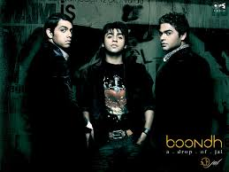

JAL(Urdu: جل, transl.Water) is a pop rock band from Lahore, Punjab, Pakistan.The band
originally consisted of songwriter, vocalist and lead guitarist, Goher Mumtaz and vocalist, Atif Aslam and later
joined by bass guitarist Omer Nadeem and later Salman Albert joined on drums in 2003. Founded in 2002, they
first became popular playing in Lahore's underground music scene with the release of their song "Aadat".

The band initially achieved commercial success with the release of their music video "Aadat", directed by Umer
Anwar, in 2003. After the success of the single, lead vocalist Atif Aslam parted ways with the band, due to
differences with lead guitarist Goher Mumtaz, to pursue a career as a solo artist.This led to Mumtaz recruiting
musicians Farhan Saeed on vocals and Aamir Tufail aka Shazi on bass guitar. The band's new line-up followed with
the release of their début studio album, Aadat, in 2004. The album was declared as the best selling album of
2004 on Geo TV by the record label Sadaf Stereo. Soon afterwards, the band recorded and released their second
studio album Boondh in 2007, which topped several music charts in South Asia. The band went on to win the MTV
Asia Award for Favorite Artist India in 2006. In 2011, Farhan Saeed also left the band to pursue a solo career,
with Goher Mumtaz taking over as the lead vocalist of the band. Jal came out with their third studio album
'Pyaas' which was released to the fans delight on 11 March 2013 in both Pakistan (by Hum Network, M Records) and
India (Universal Music). The album 'pyaas' featured remixes by DJ AKS. But even after that, On 23 December 2013,
Aamir Tufail aka Shazi officially left the band.